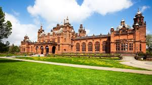
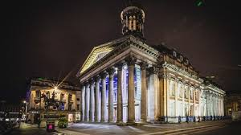
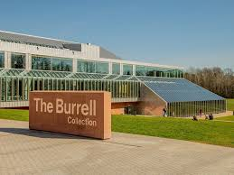
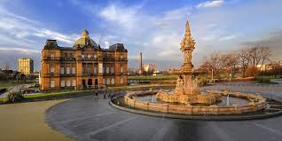

Kelvingrove is one of the most popular museums in Scotland, housing a rich collection of art, history, and natural history exhibits. Its stunning architecture and expansive galleries make it a must-see in Glasgow.
GOMA is at the heart of Glasgow’s contemporary art scene. Featuring thought-provoking exhibitions and a stunning neoclassical building, it's an essential stop for art lovers.
The Burrell Collection is a world-renowned museum featuring a wide array of art from across the world, including medieval tapestries, Islamic art, and more.
Dedicated to the history of Glasgow and its people, the People's Palace offers fascinating exhibits about the city's social and industrial past.
